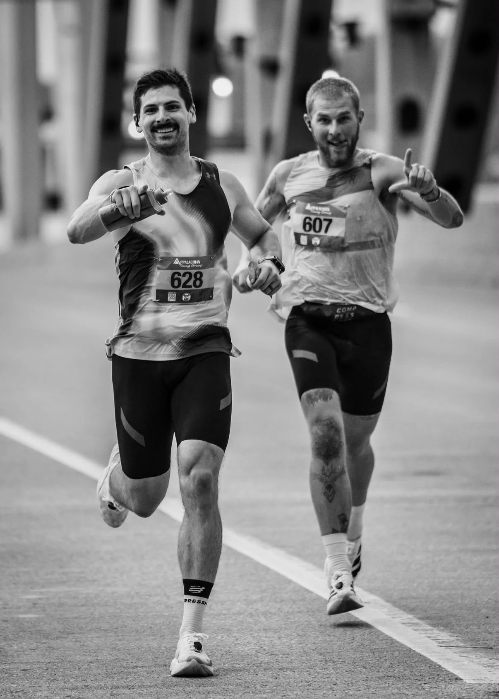
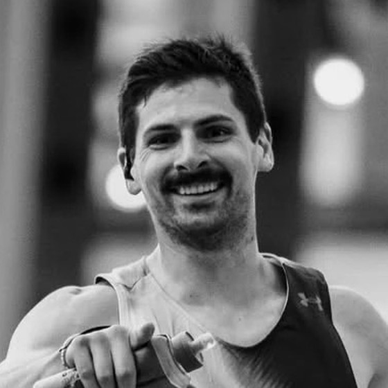
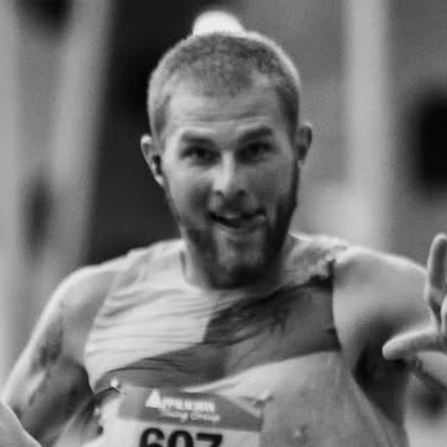

This weekend · Brookline, NH
Follow Joe
on the Ghost
Train.
15-mile laps, a 10-mile one every seventh, so lap 7 lands on 100, repeated for 30 hours.
Every lap live on SendOff.
Sat 9 AM to Sun 3 PM ET · sendoff.run
 @joe_ruccoPhoto · Midstate Massive
@joe_ruccoPhoto · Midstate Massive

This weekend · Ghost Train 30 Hour
Two racers.
One link.
Joe Rucco and Alexander Golik are both on the Ghost Train. Follow them together, live, from one race page.
Sat 9 AM to Sun 3 PM ET · sendoff.run
Ghost Train 30 Hour · Live
Halfway.
Into the night.

@joe_rucco

@alexandergolikk
Hour 15 of 30
Sat 9 AMSun 3 PM
Laps through the dark on the Ghost Train. Every lap so far is on one race page, live to the finish.
Follow live · sendoff.run
Ghost Train 30 Hour · Live
Where are
they now?
Every lap, live · sendoff.run
Ghost Train 30 Hour · Live
Find them
on the trail.
Where they are on the course map, live, with every lap so far on the same page.
Follow live · sendoff.run
@joe_rucco
@alexandergolikk